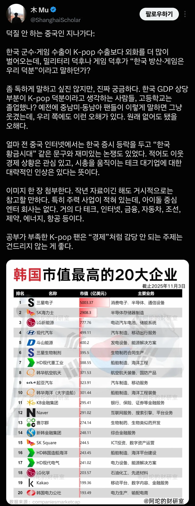

Kpop이 한국 수출액중 상당부분 차지한다고 믿는 외국팬들(특히 동남아,중남미)이 존나 많아서 지들이 불매 운동하면 타격을 줄거라 생각하는 새끼들이 많다고 함
참고로 작년 kpop 전체 매출이 3조인데
던파 작년 매출이 3.3조임

Kpop이 한국 수출액중 상당부분 차지한다고 믿는 외국팬들(특히 동남아,중남미)이 존나 많아서 지들이 불매 운동하면 타격을 줄거라 생각하는 새끼들이 많다고 함
참고로 작년 kpop 전체 매출이 3조인데
던파 작년 매출이 3.3조임
창섭이형이 좆으로 보여?
원래 멍청한 애들 돈빨아먹는게 최고임ㅋㅋㅋ 사업이든 종교든
저땐 방탄이 콘서트안했으니까 올해는 순위가능? 한 100위안
되나?
K-pop 전체가 넥슨 하나도 따잇 못하는데 되겠냐 ㅅㅂㅋㅋㅋㅋ
던파가 넥슨 매출 비중 30%정도일텐데 방탄제외하면 던파랑 비비는 상태인데
엔터사업이 개인으로 봤을땐 범접 불가능한 느낌이지만
기업으로 보면 장기 지속성 안보이는 단발사업임
사실 생산재 보다는 소비재인
광고 산업이나 마케팅 쪽으로 보는게 타당함
K-pop산업은 미국 할리우드 영화신업같은 거임
정작 수출액이나 총 생산에 차지하는 비중은 미미해도 그 나라 이미지에서 차지하는 비중은 막대함
눈에 보이지 않는 홍보효과라고 바야할듯?
ㄹㅇ 한국이라는 나라 이미지 브랜딩을 반도체랑 k pop이 하고 있잖아
던파 선에서 정리된다고 들으니까 바로 이해되네
던파 선이 좆은 아니긴해
왜 어린애들 상대로 진지하게 싸우냐
kpop 존나 별거없네 : X
던파가 좆되는구나 : O
중국 던파 망하니 뭐니 말많은거 같던데 그래도 아직 잘나가나봐??
망해도 4조씩 벌던게 줄어봐야 2 3조지
한국 던파도 잘나가고 메이플도 잘나가고
ip자체가 진짜 개 뻘짓만 안하면 지속성 있다보니
지금 텀이라고 생각해야됨
갈수록 안좋아진긴함.
쇠더룬드랑 윤명진 이사가 지금 여러가지 이유 (제일큰 사유는 개김이지만)로 정리중인 문제.
저래봐야 쟤들은 "그래도 너는 너의 노란색 피부를 사랑해야해" 하고 헛소리함
동남아 깝치면 한중일 태그 맺고 같이 패드라
난 동남아 애들보다 우리나라 윗대가리 새끼들 게임에 대한 생각이 더 좆병신같음
팩폭은 따거
그만큼 빠는 애들 중에 멍청한 애들이 많아서 그럼
중국은 경제 2위 대국인데 이미지 씹창난거보면 모름?
kpop같이 노출 많이 되는건 매출만으론 따질수없는 가치가 있긴함.
외국에서 아무나 붙잡고 한국에 대해 아는사람? 하면
아! 전자, 금융 매출이 어떻고 할 확률 보다
와! 갤럭시! BTS! 싸이! 할 확률이 더 높은것처럼
그치... 동남아에 GS25랑 CU가 엄청 많은것도 케이팝일거고, 한국 관광수지 흑자인것도 케이팝 지분이 엄청 클거임....
이쪽 동네 새끼들은 쓸데없이 자존심 자격지심은 존나 셈
기본교육 제대로 못받은 애들 생각이 그렇지 뭐
저쪽에가 관광, 매춘 수입이 큰 파이를 차지하는 나라들이 많다보니
깔보고 싶어하는 한국도 똑같을거다 라고 생각하는 경향이 크다더라
애초에 동남아는 돈쓰지도 않음
전 세계 게임시장 규모가 음악시장보다 6‐10배 정도 더 큼.
하지만 문화적 영향력은 음악이 더 광범위한 느낌임.
게임은 그냥 게임관련 매출로 끝나는 경우가 많고, 음악은 음악관련 매출은 별로지만 문화적으로 더 광범위한 영향을 끼침.
SK해력사 이름 멋있다 ㅋㅋ
근데 게임이야 원래부터 효자? 품목이었고. kpop으로 많이 유의미한 수출 품목이 식품 쪽이지 싶음. 생각보다 식품도 꽤나 수출로 버는돈 꽤 쎄던데. 화장품이야 원래 유명했지만 그래도 약간의 덕을 봤을거같고 kpop에